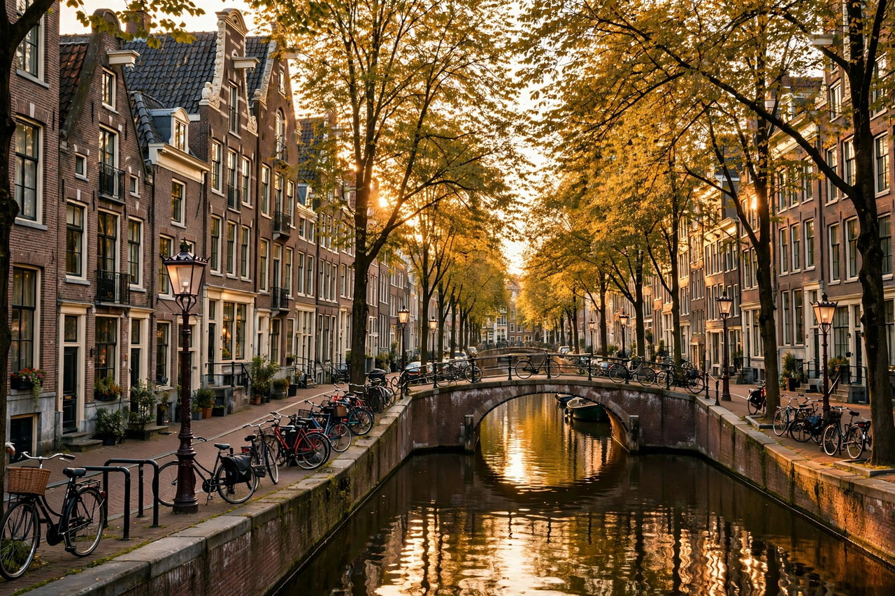

From Wikipedia, the free encyclopedia
| Amsterdam | |
|---|---|
 | |
| Country | Netherlands |
| Province | North Holland |
| Population | c. 920,000 (city); c. 2.5 million (metro area) |
| Elevation | −2 m (−7 ft) |
| Founded | c. 1275 (dam on the Amstel) |
Amsterdam is the capital and most populous city of the Netherlands. It is colloquially referred to as the "Venice of the North", for its large number of canals, now designated a UNESCO World Heritage Site. Amsterdam was founded at the mouth of the Amstel River, which was dammed to control flooding; the city's name derives from the damming of the river.
The city grew around trade: in the 17th-century Dutch Golden Age, Amsterdam became the world's leading port and financial centre, home to the Dutch East India Company, the first stock exchange, and the canal ring that still defines its centre. Rembrandt, Vermeer, and Spinoza were among its inhabitants.
Amsterdam lies in the province of North Holland, largely below sea level, on land reclaimed from water through polders and protected by dikes and pumping stations. The Amstel and IJ rivers and an extensive network of canals — including the Prinsengracht, Keizersgracht, and Herengracht — traverse the city. Schiphol Airport, one of Europe's busiest, lies southwest of the centre.
The city is known for the Rijksmuseum, the Van Gogh Museum, the Anne Frank House, and the Concertgebouw orchestra. Cycling is the dominant mode of transport, with more bicycles than residents and an extensive network of cycle paths. Amsterdam is also noted for its liberal social policies and large international community.
Categories: Amsterdam | Capitals in Europe | Municipalities of North Holland